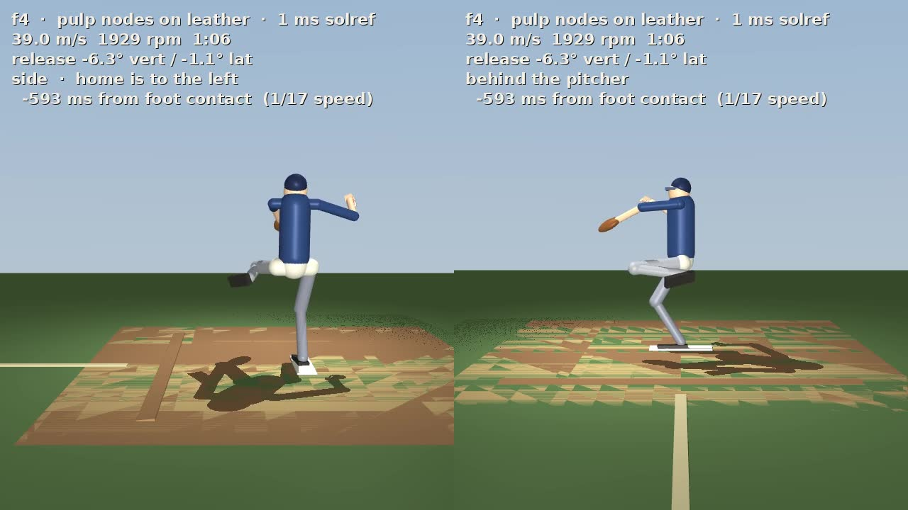
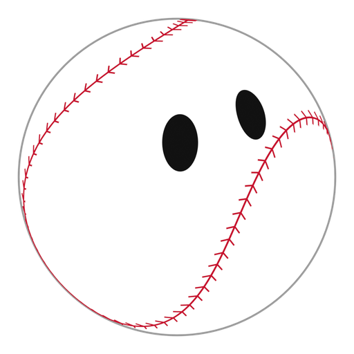
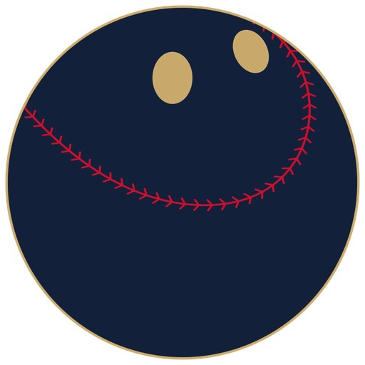
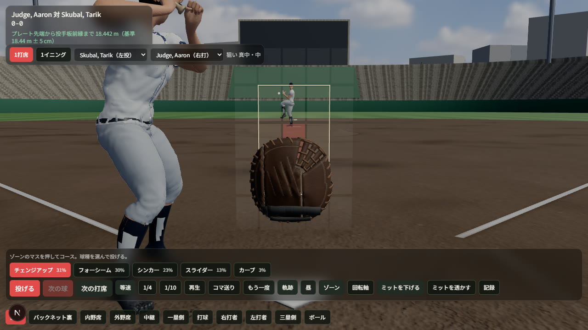

作成中

PitchLab
2026検証中・ステージ1（直球）が未達
投手の新しい変化球を探すための全身物理シミュレーション。MuJoCo上で研究用モーションキャプチャを動かし、指・手首・縫い目・摩擦まで再現して、まずは直球の再現から確かめています。


About
現場で見つけた小さな「困った」を、実際に使えるツールにすることを大切にしています。
安田 風介
Fusuke Yasuda
大阪出身。ニュージーランドの高校を卒業し、2026年10月からはマレーシアの Multimedia University でコンピュータサイエンスを学びます。
独立リーグ球団「和歌山ウェイブス」で球団初のインターンとして広報を担当し、現場の課題に直接ふれたことをきっかけに、 選手評価や投球解析などのWebツールを個人で企画・開発・公開するようになりました。株式の自動監視システムなど、野球以外の分野でも手を動かしています。
AIを活用した開発と、新しい技術に飛び込むことが好きです。日本語と英語の両方で仕事ができます。
Vision
ものをつくる理由の、いちばん奥にあるもの。
野球を、世界のどこでも「仕事にできる」スポーツに。
A world where anyone who loves baseball can make it their career.
アメリカ、日本、韓国、台湾では、野球選手が大勢の観客の前でプレーし、何億ドルもの報酬を得ることができます。 けれど、それ以外のアジアやヨーロッパの多くの国では、野球はあってもクリケットなどに市場を取られていたり、プレーする人がまだ少なかったりします。
この差を埋めて、ほとんどの国で野球が盛んに行われ、野球を好きなすべての人が野球を職業にできる世界。 それは本気でつくれると信じています。
アメリカ・日本・韓国・台湾。満員の観客の前でプレーし、野球で生計を立てられる。
その他のアジアやヨーロッパの多く。他の競技に市場を取られ、プレー人口も少ない。
ほとんどの国で野球が盛んになり、野球好きの誰もがその道で生きていける。
大きく言えば、「世界に野球を広める仕事」がしたい。
コードを書くことは、そのための手段のひとつです。アジアの選手と日本の独立リーグをつなぐことを目指した ABBS のように、まずは自分の手で動くものをつくりながら、技術とデータで野球の現場を支える力をつけていきます。
Skills
日々の開発で使っている言語・技術と、得意な領域の知識です。
Projects
公開しているアプリと、手で渡しているものです。まとまりごとに並べて、カテゴリでも絞れます。
まだ完成していない、いま検証を続けているものです。結果が出ていない部分も、そのまま書いています。

検証中・ステージ1（直球）が未達
投手の新しい変化球を探すための全身物理シミュレーション。MuJoCo上で研究用モーションキャプチャを動かし、指・手首・縫い目・摩擦まで再現して、まずは直球の再現から確かめています。

作成中 · 基盤は稼働中
自分のPCの上で動くLLM（Qwen3.8-27B）を中核に、生活と学業の情報を一元管理する「自分専用のAI秘書」。データをクラウドに出さず、能動的に動き、未来の予定とリスクを見張り続けるシステムを構築中。
Experience
日本・ニュージーランド・マレーシアでの、学びと実践の記録です。
GitHub
この1年、公開リポジトリにコードを入れた日です。